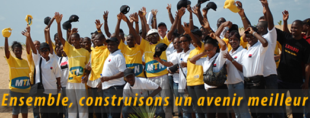

Fondation MTN

Présentation
MTN, Opérateur de téléphonie mobile est une entreprise Africaine qui se veut être un acteur du développement socio-économique du pays dans lequel il opère. Dans les années 2001 ne pouvant rester insensible à la terrible inondation qui frappa le Mozambique, MTN, à la tête d'entreprises Sud-africaines, décide de voler au secours de ce pays sinistré. D'où l'adoption immédiate du concept de Corporate Social Responsibility qui peut se comprendre comme la Responsabilité Sociale des Entreprises vis-à-vis des communautés. L'adoption de ce concept induit la nécessité de la création d'une Fondation en Afrique du Sud et de la décision immédiate d'en créer une dans chaque unité d'opération.
Consciente du fait qu'elle doit mener à bien ses objectifs économiques et être porteuse de valeurs humanistes et de solidarité, la Fondation MTN a donc pour but d'améliorer les conditions de vie des couches les plus défavorisées de la communauté avec des domaines d'intervention qui diffèrent d'une unité d'opérations à une autre.
Au Bénin plus précisément, les secteurs d'intervention ont été identifiés selon les besoins réels des dites couches.
Ainsi, la Fondation MTN Bénin, après identification des besoins, intervient dans les domaines de la Santé, de l'Education en 2008, un volet social en direction des personnes handicapées a été pris en compte par le lancement du Pojet Handi-Mobile.
1- Notre vision
Face à ses domaines d'intervention, les missions de la Fondation MTN Bénin seront donc de :
- Insérer les programmes d'investissement dans le domaine social de MTN Bénin en tant que partie intégrante de l'action de l'entreprise ;
- Développer la capacité des communautés nationales à se prendre en charge grâce au financement de projets qui concourent à leur bien-être ;
- Participer activement au développement économique et social de la nation béninoise.
La création de la fondation MTN Bénin est rendue possible par la loi de 1901 sur les associations. Elle est à but non lucratif, laïque et apolitique. Ses missions se traduisent donc par des financements de projets ayant remplis les conditions d'éligibilité au financement.
1- Notre vision
Sont éligibles aux critères de financement de la fondation MTN, les projets qui :
- Entrent en ligne avec les priorités nationales en matière de développement en République du Bénin ;
- Sont conformes à la vision de la fondation MTN Bénin ;
- Favorisent le partenariat et le partage des ressources ;
- Qui peuvent être mis en œuvre dans un délai bien défini ;
- Qui cadrent avec la philosophie du développement durable ;
- Sont susceptibles d'avoir un impact positif sur l'ensemble de la communauté ;
- Sont basés sur des études qui conditionnent leur faisabilité ;
- Sont basés sur des études qui attestent que le projet répond ou répondra aux attentes des bénéficiaires ;
- Sont à but non lucratif